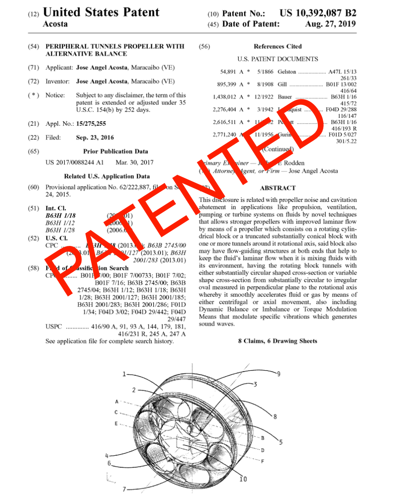
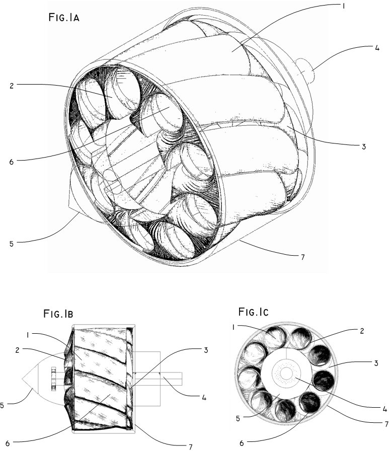

[August 27 th 2019]: Patented this invention is now the US. Pat. 10392087 B2.
Today the USPTO published my second granted patent ( US10392087 B2) related to the peripheral tunnel propeller.

The new disclosures, my patent US9157324 about the Peripheral Tunnel Propeller, discloses:
Also, the modulating torque of this propeller maybe used to mimic the noise of other devices to the disguise of the machine’s natural sounds.
Peripheral Tunnels Propeller Embodied as a Computer Fan vs Bladed Propeller
Look at what happens when the gas molecules faces the constant circular section from the Peripheral Tunnels Propeller, when a circular container matches a circular content, the latter isn’t perturbed as the container rotates since the container shape relative to it’s content its the same at any angle.
The Patent for My Peripheral Tunnels Propeller invention, have been issued by the USPTO on October 13th, 2015 with Patent Number US 9,157,324 B2, having as earliest publication date January 27th, 2011, and as priority date(provisional related application) from July 23, 2009.
[ Patent US 9,157,324 B2 at USPTO.gov ]
NOTICE
:35 U.S.C. § 154(d) about provisional rights under pre-AIA stands: “a patent shall include the right to obtain a reasonable royalty from any person who, during the period beginning on the date of publication of the application for such patent under section 122(b)”, Accordingly an entity making use of this invention in USA from January 27th, 2011 is committed to reach us and negotiate an compensation on due royalties, I’m considering special NDA agreements in case is required non disclosure to related works or activities, off course this offering is limited by the time this patent is not assigned to an third party, so any entity should contact me as soon as possible, to avoid further exposition or potentially having to deal with other assignee, or having to pay other expenses and compensation related to legal proceedings.

This is an Ultra Quiet propeller I invented, Its based on my disclosure of the principle that fluid inside barrels could be accelerated with the minimal turbulence due parasite flows.
This project is on PATENT PENDING.
The Following is a more formal Abstract on what is, and how it works:
Quiet Propeller Design Disclosure , which consists on a Barrel drilled with spirals Peripheral Tunnels..
It main feature is Quiet Operation , this is achieved thanks to the minimal turbulence induced by the tunnels while accelerates/decelerates the liquid or gas, also due the high strength of the device minimize torsional flexions, avoiding noise generation due flexion or deformation and collateral fatigue damage.